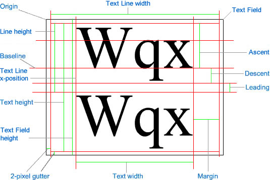

| Language Version: | ActionScript 3.0 |
| Runtime Versions: | AIR 1.0 Flash Player 9 |
The TextLineMetrics class contains information about the text position and measurements of a
line of text within a text field. All measurements are in pixels. Objects of this class are returned by the
flash.text.TextField.getLineMetrics() method.
For measurements related to the text field containing the line of text (for example, the "Text Field height" measurement in the diagram), see flash.text.TextField.
The following diagram indicates the points and measurements of a text field and the line of text the field contains:

View the examples
public var ascent:Number| Language Version: | ActionScript 3.0 |
| Runtime Versions: | AIR 1.0 Flash Player 9 |
The ascent value of the text is the length from the baseline to the top of the line height in pixels. See the
"Ascent" measurement in the overview diagram for this class.
See also
public var descent:Number| Language Version: | ActionScript 3.0 |
| Runtime Versions: | AIR 1.0 Flash Player 9 |
The descent value of the text is the length from the baseline to the bottom depth of the line in pixels.
See the "Descent" measurement in the overview diagram for this class.
See also
public var height:Number| Language Version: | ActionScript 3.0 |
| Runtime Versions: | AIR 1.0 Flash Player 9 |
The height value of the text of the selected lines (not necessarily the complete text) in pixels. The height of the
text line does not include the gutter height. See the "Line height" measurement in the overview diagram
for this class.
See also
public var leading:Number| Language Version: | ActionScript 3.0 |
| Runtime Versions: | AIR 1.0 Flash Player 9 |
The leading value is the measurement of the vertical distance between the lines of text.
See the "Leading" measurement in the overview diagram for this class.
See also
public var width:Number| Language Version: | ActionScript 3.0 |
| Runtime Versions: | AIR 1.0 Flash Player 9 |
The width value is the width of the text of the selected lines (not necessarily the complete text) in pixels. The width of the
text line is not the same as the width of the text field. The width of the text line is relative to the
text field width, minus the gutter width of 4 pixels (2 pixels on each side). See the "Text Line width"
measurement in the overview diagram for this class.
See also
public var x:Number| Language Version: | ActionScript 3.0 |
| Runtime Versions: | AIR 1.0 Flash Player 9 |
The x value is the left position of the first character in pixels. This value includes the margin,
indent (if any), and gutter widths. See the "Text Line x-position" in the overview diagram for this class.
See also
public function TextLineMetrics(x:Number, width:Number, height:Number, ascent:Number, descent:Number, leading:Number)| Language Version: | ActionScript 3.0 |
| Runtime Versions: | AIR 1.0 Flash Player 9 |
Creates a TextLineMetrics object. The TextLineMetrics object contains information about
the text metrics of a line of text in a text field. Objects of this class are returned by the
flash.text.TextField.getLineMetrics() method.
See the diagram in the overview for this class for the properties in context.
Parameters | x:Number — The left position of the first character in pixels.
|
| |
| width:Number — The width of the text of the selected lines (not necessarily the complete text) in pixels.
|
| |
| height:Number — The height of the text of the selected lines (not necessarily the complete text) in pixels.
|
| |
| ascent:Number — The length from the baseline to the top of the line height in pixels.
|
| |
| descent:Number — The length from the baseline to the bottom depth of the line in pixels.
|
| |
| leading:Number — The measurement of the vertical distance between the lines of text.
|
See also
The following example creates the classes TextLineMetricsExample and
LineMetricsReader to print out a message in the Flash Player via an XML object. This
is accomplished using the following steps:
- Create a property called
label of type TextField. - The constructor calls
configureAssets(), which does the following:
- Sets the stage's alignment to top-left and no scale.
- Creates a new TextField object named
label. - Enables
label's background and sets the color to white. - Allows
label's text to span multiple lines with automatic word wrapping. - Assigns the result of a call to
getLabelText() to the text property
of label. The getLabelText() method creates a variable of type XML and assigns
it to an XML node named body, which is populated with a long sentence. - Adds
label to the display list using addChild().
- A method that listens for
resize events performed on the stage is then added called
resizeHandler(). Every time the Flash Player window size is changed, a RESIZE
event is dispatched and the following happens:
draw() is called to ensure that label appears in the center of the
stage and surrounded by a 10-pixel buffer.setTimeout() then executes showMetrics() after a short delay. The
delay is added because the line metrics are not updated until after the RESIZE event has
completed and the stage has fully re-drawn.showMetrics() assigns a TextLineMetrics variable named metrics to
the result of a call to getLineMetrics() and this variable is then passed to
a new instance of a LineMetricsReader instance named reader. The two
variables are then used within calls to trace() to print out the first (and only)
line of label and information provided by the LineMetricsReader instance through its
toString() method.
- The constructor forces a single dispatch of the
resize event to force
label to be drawn correctly when the SWF file is first loaded.
package {
import flash.display.Sprite;
import flash.display.StageAlign;
import flash.display.StageScaleMode;
import flash.events.*;
import flash.text.TextField;
import flash.text.TextLineMetrics;
import flash.utils.setTimeout;
public class TextLineMetricsExample extends Sprite {
private var gutter:int = 10;
private var label:TextField;
public function TextLineMetricsExample() {
configureAssets();
configureListeners();
resizeHandler(new Event(Event.RESIZE));
}
private function showMetrics():void {
var metrics:TextLineMetrics = label.getLineMetrics(0);
var reader:LineMetricsReader = new LineMetricsReader(metrics);
trace("lineText: " + label.getLineText(0));
trace("metrics: " + reader);
}
private function configureAssets():void {
stage.align = StageAlign.TOP_LEFT;
stage.scaleMode = StageScaleMode.NO_SCALE;
label = new TextField();
label.background = true;
label.backgroundColor = 0xFFFFFF;
label.multiline = true;
label.wordWrap = true;
label.text = getLabelText();
addChild(label);
}
private function configureListeners():void {
stage.addEventListener(Event.RESIZE, resizeHandler);
}
private function resizeHandler(event:Event):void {
draw();
setTimeout(showMetrics, 100);
}
private function draw():void {
label.x = gutter;
label.y = gutter;
label.width = stage.stageWidth - (gutter * 2);
label.height = stage.stageHeight - (gutter * 2);
}
private function getLabelText():String {
var text:XML = <body>The Flex product line enables developers to build rich Internet applications that blend the responsiveness of desktop software, the cross-platform reach of the web, and the expressiveness of the Flash Platform.</body>
return text.toString();
}
}
}
import flash.text.TextLineMetrics;
class LineMetricsReader {
private var metrics:TextLineMetrics;
public function LineMetricsReader(metrics:TextLineMetrics) {
this.metrics = metrics;
}
public function toString():String {
return "[TextLineMetrics ascent:" + metrics.ascent
+ ", descent:" + metrics.descent
+ ", leading:" + metrics.leading
+ ", width:" + metrics.width
+ ", height:" + metrics.height
+ ", x:" + metrics.x
+ "]";
}
}
© 2009 Adobe Systems Incorporated. All rights reserved.
Thu Feb 19 2009, 09:49 AM -08:00 TextLineMetrics TextLineMetrics TextLineMetrics TextLineMetrics TextLineMetrics TextLineMetrics TextLineMetrics TextLineMetrics TextLineMetrics TextLineMetrics TextLineMetrics TextLineMetrics TextLineMetrics TextLineMetrics TextLineMetrics TextLineMetrics TextLineMetrics TextLineMetrics TextLineMetrics TextLineMetrics TextLineMetrics TextLineMetrics TextLineMetrics TextLineMetrics TextLineMetrics TextLineMetrics TextLineMetrics TextLineMetrics TextLineMetrics TextLineMetrics TextLineMetrics TextLineMetrics TextLineMetrics TextLineMetrics TextLineMetrics TextLineMetrics TextLineMetrics TextLineMetrics TextLineMetrics TextLineMetrics TextLineMetrics TextLineMetrics TextLineMetrics TextLineMetrics TextLineMetrics TextLineMetrics TextLineMetrics TextLineMetrics TextLineMetrics TextLineMetrics TextLineMetrics TextLineMetrics TextLineMetrics TextLineMetrics TextLineMetrics TextLineMetrics TextLineMetrics TextLineMetrics TextLineMetrics TextLineMetrics TextLineMetrics TextLineMetrics TextLineMetrics TextLineMetrics TextLineMetrics TextLineMetrics TextLineMetrics TextLineMetrics TextLineMetrics TextLineMetrics TextLineMetrics TextLineMetrics TextLineMetrics TextLineMetrics TextLineMetrics TextLineMetrics TextLineMetrics TextLineMetrics TextLineMetrics TextLineMetrics TextLineMetrics TextLineMetrics TextLineMetrics TextLineMetrics TextLineMetrics TextLineMetrics TextLineMetrics TextLineMetrics TextLineMetrics TextLineMetrics TextLineMetrics TextLineMetrics TextLineMetrics TextLineMetrics TextLineMetrics TextLineMetrics TextLineMetrics TextLineMetrics TextLineMetrics TextLineMetrics TextLineMetrics TextLineMetrics TextLineMetrics TextLineMetrics TextLineMetrics TextLineMetrics TextLineMetrics TextLineMetrics TextLineMetrics TextLineMetrics TextLineMetrics TextLineMetrics TextLineMetrics TextLineMetrics TextLineMetrics TextLineMetrics TextLineMetrics TextLineMetrics TextLineMetrics TextLineMetrics TextLineMetrics TextLineMetrics TextLineMetrics TextLineMetrics TextLineMetrics TextLineMetrics TextLineMetrics TextLineMetrics TextLineMetrics TextLineMetrics TextLineMetrics TextLineMetrics TextLineMetrics TextLineMetrics TextLineMetrics TextLineMetrics TextLineMetrics TextLineMetrics TextLineMetrics TextLineMetrics TextLineMetrics TextLineMetrics TextLineMetrics TextLineMetrics TextLineMetrics TextLineMetrics TextLineMetrics TextLineMetrics TextLineMetrics TextLineMetrics TextLineMetrics TextLineMetrics TextLineMetrics TextLineMetrics TextLineMetrics TextLineMetrics TextLineMetrics TextLineMetrics TextLineMetrics TextLineMetrics TextLineMetrics TextLineMetrics TextLineMetrics TextLineMetrics TextLineMetrics TextLineMetrics TextLineMetrics TextLineMetrics TextLineMetrics TextLineMetrics TextLineMetrics TextLineMetrics TextLineMetrics TextLineMetrics TextLineMetrics TextLineMetrics TextLineMetrics TextLineMetrics TextLineMetrics TextLineMetrics TextLineMetrics TextLineMetrics TextLineMetrics TextLineMetrics TextLineMetrics TextLineMetrics TextLineMetrics TextLineMetrics TextLineMetrics TextLineMetrics TextLineMetrics TextLineMetrics TextLineMetrics TextLineMetrics TextLineMetrics TextLineMetrics TextLineMetrics TextLineMetrics TextLineMetrics TextLineMetrics TextLineMetrics TextLineMetrics TextLineMetrics TextLineMetrics TextLineMetrics TextLineMetrics TextLineMetrics TextLineMetrics TextLineMetrics TextLineMetrics TextLineMetrics TextLineMetrics TextLineMetrics TextLineMetrics TextLineMetrics TextLineMetrics TextLineMetrics TextLineMetrics TextLineMetrics TextLineMetrics TextLineMetrics TextLineMetrics TextLineMetrics TextLineMetrics TextLineMetrics TextLineMetrics TextLineMetrics TextLineMetrics TextLineMetrics TextLineMetrics TextLineMetrics TextLineMetrics TextLineMetrics TextLineMetrics TextLineMetrics TextLineMetrics TextLineMetrics TextLineMetrics TextLineMetrics TextLineMetrics TextLineMetrics TextLineMetrics TextLineMetrics TextLineMetrics TextLineMetrics TextLineMetrics TextLineMetrics TextLineMetrics TextLineMetrics TextLineMetrics TextLineMetrics TextLineMetrics TextLineMetrics TextLineMetrics TextLineMetrics TextLineMetrics TextLineMetrics TextLineMetrics TextLineMetrics TextLineMetrics TextLineMetrics TextLineMetrics TextLineMetrics TextLineMetrics TextLineMetrics TextLineMetrics TextLineMetrics TextLineMetrics TextLineMetrics TextLineMetrics TextLineMetrics TextLineMetrics TextLineMetrics TextLineMetrics TextLineMetrics TextLineMetrics TextLineMetrics TextLineMetrics TextLineMetrics TextLineMetrics TextLineMetrics TextLineMetrics TextLineMetrics TextLineMetrics TextLineMetrics TextLineMetrics TextLineMetrics TextLineMetrics TextLineMetrics TextLineMetrics TextLineMetrics TextLineMetrics TextLineMetrics TextLineMetrics TextLineMetrics TextLineMetrics TextLineMetrics TextLineMetrics TextLineMetrics TextLineMetrics TextLineMetrics TextLineMetrics TextLineMetrics TextLineMetrics TextLineMetrics TextLineMetrics TextLineMetrics TextLineMetrics TextLineMetrics TextLineMetrics TextLineMetrics TextLineMetrics TextLineMetrics TextLineMetrics TextLineMetrics TextLineMetrics TextLineMetrics TextLineMetrics TextLineMetrics TextLineMetrics TextLineMetrics TextLineMetrics TextLineMetrics TextLineMetrics TextLineMetrics TextLineMetrics TextLineMetrics TextLineMetrics TextLineMetrics TextLineMetrics TextLineMetrics TextLineMetrics TextLineMetrics TextLineMetrics TextLineMetrics TextLineMetrics TextLineMetrics TextLineMetrics TextLineMetrics TextLineMetrics TextLineMetrics TextLineMetrics TextLineMetrics TextLineMetrics TextLineMetrics TextLineMetrics TextLineMetrics TextLineMetrics TextLineMetrics TextLineMetrics TextLineMetrics TextLineMetrics TextLineMetrics TextLineMetrics TextLineMetrics TextLineMetrics TextLineMetrics TextLineMetrics TextLineMetrics TextLineMetrics TextLineMetrics TextLineMetrics TextLineMetrics TextLineMetrics TextLineMetrics TextLineMetrics TextLineMetrics TextLineMetrics TextLineMetrics TextLineMetrics TextLineMetrics TextLineMetrics TextLineMetrics TextLineMetrics TextLineMetrics TextLineMetrics TextLineMetrics TextLineMetrics TextLineMetrics TextLineMetrics TextLineMetrics TextLineMetrics TextLineMetrics TextLineMetrics TextLineMetrics TextLineMetrics TextLineMetrics TextLineMetrics TextLineMetrics TextLineMetrics TextLineMetrics TextLineMetrics TextLineMetrics TextLineMetrics TextLineMetrics TextLineMetrics TextLineMetrics TextLineMetrics TextLineMetrics TextLineMetrics TextLineMetrics TextLineMetrics TextLineMetrics TextLineMetrics TextLineMetrics TextLineMetrics TextLineMetrics TextLineMetrics TextLineMetrics TextLineMetrics TextLineMetrics TextLineMetrics TextLineMetrics TextLineMetrics TextLineMetrics TextLineMetrics TextLineMetrics TextLineMetrics TextLineMetrics TextLineMetrics TextLineMetrics TextLineMetrics TextLineMetrics TextLineMetrics TextLineMetrics TextLineMetrics TextLineMetrics TextLineMetrics TextLineMetrics TextLineMetrics TextLineMetrics TextLineMetrics TextLineMetrics TextLineMetrics TextLineMetrics TextLineMetrics TextLineMetrics TextLineMetrics TextLineMetrics TextLineMetrics TextLineMetrics TextLineMetrics TextLineMetrics TextLineMetrics TextLineMetrics TextLineMetrics TextLineMetrics TextLineMetrics TextLineMetrics TextLineMetrics TextLineMetrics TextLineMetrics TextLineMetrics TextLineMetrics TextLineMetrics TextLineMetrics TextLineMetrics TextLineMetrics TextLineMetrics TextLineMetrics TextLineMetrics TextLineMetrics TextLineMetrics TextLineMetrics TextLineMetrics TextLineMetrics TextLineMetrics TextLineMetrics TextLineMetrics TextLineMetrics TextLineMetrics TextLineMetrics TextLineMetrics TextLineMetrics TextLineMetrics TextLineMetrics TextLineMetrics TextLineMetrics TextLineMetrics TextLineMetrics TextLineMetrics TextLineMetrics TextLineMetrics TextLineMetrics TextLineMetrics TextLineMetrics TextLineMetrics TextLineMetrics TextLineMetrics TextLineMetrics TextLineMetrics TextLineMetrics TextLineMetrics TextLineMetrics TextLineMetrics TextLineMetrics TextLineMetrics TextLineMetrics TextLineMetrics TextLineMetrics
flash.text.TextLineMetrics flash.text.TextLineMetrics flash.text.TextLineMetrics flash.text.TextLineMetrics flash.text.TextLineMetrics flash.text.TextLineMetrics flash.text.TextLineMetrics flash.text.TextLineMetrics flash.text.TextLineMetrics flash.text.TextLineMetrics flash.text.TextLineMetrics flash.text.TextLineMetrics flash.text.TextLineMetrics flash.text.TextLineMetrics flash.text.TextLineMetrics flash.text.TextLineMetrics flash.text.TextLineMetrics flash.text.TextLineMetrics flash.text.TextLineMetrics flash.text.TextLineMetrics flash.text.TextLineMetrics flash.text.TextLineMetrics flash.text.TextLineMetrics flash.text.TextLineMetrics flash.text.TextLineMetrics flash.text.TextLineMetrics flash.text.TextLineMetrics flash.text.TextLineMetrics flash.text.TextLineMetrics flash.text.TextLineMetrics flash.text.TextLineMetrics flash.text.TextLineMetrics flash.text.TextLineMetrics flash.text.TextLineMetrics flash.text.TextLineMetrics flash.text.TextLineMetrics flash.text.TextLineMetrics flash.text.TextLineMetrics flash.text.TextLineMetrics flash.text.TextLineMetrics flash.text.TextLineMetrics flash.text.TextLineMetrics flash.text.TextLineMetrics flash.text.TextLineMetrics flash.text.TextLineMetrics flash.text.TextLineMetrics flash.text.TextLineMetrics flash.text.TextLineMetrics flash.text.TextLineMetrics flash.text.TextLineMetrics flash.text.TextLineMetrics flash.text.TextLineMetrics flash.text.TextLineMetrics flash.text.TextLineMetrics flash.text.TextLineMetrics flash.text.TextLineMetrics flash.text.TextLineMetrics flash.text.TextLineMetrics flash.text.TextLineMetrics flash.text.TextLineMetrics flash.text.TextLineMetrics flash.text.TextLineMetrics flash.text.TextLineMetrics flash.text.TextLineMetrics flash.text.TextLineMetrics flash.text.TextLineMetrics flash.text.TextLineMetrics flash.text.TextLineMetrics flash.text.TextLineMetrics flash.text.TextLineMetrics flash.text.TextLineMetrics flash.text.TextLineMetrics flash.text.TextLineMetrics flash.text.TextLineMetrics flash.text.TextLineMetrics flash.text.TextLineMetrics flash.text.TextLineMetrics flash.text.TextLineMetrics flash.text.TextLineMetrics flash.text.TextLineMetrics flash.text.TextLineMetrics flash.text.TextLineMetrics flash.text.TextLineMetrics flash.text.TextLineMetrics flash.text.TextLineMetrics flash.text.TextLineMetrics flash.text.TextLineMetrics flash.text.TextLineMetrics flash.text.TextLineMetrics flash.text.TextLineMetrics flash.text.TextLineMetrics flash.text.TextLineMetrics flash.text.TextLineMetrics flash.text.TextLineMetrics flash.text.TextLineMetrics flash.text.TextLineMetrics flash.text.TextLineMetrics flash.text.TextLineMetrics flash.text.TextLineMetrics flash.text.TextLineMetrics flash.text.TextLineMetrics flash.text.TextLineMetrics flash.text.TextLineMetrics flash.text.TextLineMetrics flash.text.TextLineMetrics flash.text.TextLineMetrics flash.text.TextLineMetrics flash.text.TextLineMetrics flash.text.TextLineMetrics flash.text.TextLineMetrics flash.text.TextLineMetrics flash.text.TextLineMetrics flash.text.TextLineMetrics flash.text.TextLineMetrics flash.text.TextLineMetrics flash.text.TextLineMetrics flash.text.TextLineMetrics flash.text.TextLineMetrics flash.text.TextLineMetrics flash.text.TextLineMetrics flash.text.TextLineMetrics flash.text.TextLineMetrics flash.text.TextLineMetrics flash.text.TextLineMetrics flash.text.TextLineMetrics flash.text.TextLineMetrics flash.text.TextLineMetrics flash.text.TextLineMetrics flash.text.TextLineMetrics flash.text.TextLineMetrics flash.text.TextLineMetrics flash.text.TextLineMetrics flash.text.TextLineMetrics flash.text.TextLineMetrics flash.text.TextLineMetrics flash.text.TextLineMetrics flash.text.TextLineMetrics flash.text.TextLineMetrics flash.text.TextLineMetrics flash.text.TextLineMetrics flash.text.TextLineMetrics flash.text.TextLineMetrics flash.text.TextLineMetrics flash.text.TextLineMetrics flash.text.TextLineMetrics flash.text.TextLineMetrics flash.text.TextLineMetrics flash.text.TextLineMetrics flash.text.TextLineMetrics flash.text.TextLineMetrics flash.text.TextLineMetrics flash.text.TextLineMetrics flash.text.TextLineMetrics flash.text.TextLineMetrics flash.text.TextLineMetrics flash.text.TextLineMetrics flash.text.TextLineMetrics flash.text.TextLineMetrics flash.text.TextLineMetrics flash.text.TextLineMetrics flash.text.TextLineMetrics flash.text.TextLineMetrics flash.text.TextLineMetrics flash.text.TextLineMetrics flash.text.TextLineMetrics flash.text.TextLineMetrics flash.text.TextLineMetrics flash.text.TextLineMetrics flash.text.TextLineMetrics flash.text.TextLineMetrics flash.text.TextLineMetrics flash.text.TextLineMetrics flash.text.TextLineMetrics flash.text.TextLineMetrics flash.text.TextLineMetrics flash.text.TextLineMetrics flash.text.TextLineMetrics flash.text.TextLineMetrics flash.text.TextLineMetrics flash.text.TextLineMetrics flash.text.TextLineMetrics flash.text.TextLineMetrics flash.text.TextLineMetrics flash.text.TextLineMetrics flash.text.TextLineMetrics flash.text.TextLineMetrics flash.text.TextLineMetrics flash.text.TextLineMetrics flash.text.TextLineMetrics flash.text.TextLineMetrics flash.text.TextLineMetrics flash.text.TextLineMetrics flash.text.TextLineMetrics flash.text.TextLineMetrics flash.text.TextLineMetrics flash.text.TextLineMetrics flash.text.TextLineMetrics flash.text.TextLineMetrics flash.text.TextLineMetrics flash.text.TextLineMetrics flash.text.TextLineMetrics flash.text.TextLineMetrics flash.text.TextLineMetrics flash.text.TextLineMetrics flash.text.TextLineMetrics flash.text.TextLineMetrics flash.text.TextLineMetrics flash.text.TextLineMetrics flash.text.TextLineMetrics flash.text.TextLineMetrics flash.text.TextLineMetrics flash.text.TextLineMetrics flash.text.TextLineMetrics flash.text.TextLineMetrics flash.text.TextLineMetrics flash.text.TextLineMetrics flash.text.TextLineMetrics flash.text.TextLineMetrics flash.text.TextLineMetrics flash.text.TextLineMetrics flash.text.TextLineMetrics flash.text.TextLineMetrics flash.text.TextLineMetrics flash.text.TextLineMetrics flash.text.TextLineMetrics flash.text.TextLineMetrics flash.text.TextLineMetrics flash.text.TextLineMetrics flash.text.TextLineMetrics flash.text.TextLineMetrics flash.text.TextLineMetrics flash.text.TextLineMetrics flash.text.TextLineMetrics flash.text.TextLineMetrics flash.text.TextLineMetrics flash.text.TextLineMetrics flash.text.TextLineMetrics flash.text.TextLineMetrics flash.text.TextLineMetrics flash.text.TextLineMetrics flash.text.TextLineMetrics flash.text.TextLineMetrics flash.text.TextLineMetrics flash.text.TextLineMetrics flash.text.TextLineMetrics flash.text.TextLineMetrics flash.text.TextLineMetrics flash.text.TextLineMetrics flash.text.TextLineMetrics flash.text.TextLineMetrics flash.text.TextLineMetrics flash.text.TextLineMetrics flash.text.TextLineMetrics flash.text.TextLineMetrics flash.text.TextLineMetrics flash.text.TextLineMetrics flash.text.TextLineMetrics flash.text.TextLineMetrics flash.text.TextLineMetrics flash.text.TextLineMetrics flash.text.TextLineMetrics flash.text.TextLineMetrics flash.text.TextLineMetrics flash.text.TextLineMetrics flash.text.TextLineMetrics flash.text.TextLineMetrics flash.text.TextLineMetrics flash.text.TextLineMetrics flash.text.TextLineMetrics flash.text.TextLineMetrics flash.text.TextLineMetrics flash.text.TextLineMetrics flash.text.TextLineMetrics flash.text.TextLineMetrics flash.text.TextLineMetrics flash.text.TextLineMetrics flash.text.TextLineMetrics flash.text.TextLineMetrics flash.text.TextLineMetrics flash.text.TextLineMetrics flash.text.TextLineMetrics flash.text.TextLineMetrics flash.text.TextLineMetrics flash.text.TextLineMetrics flash.text.TextLineMetrics flash.text.TextLineMetrics flash.text.TextLineMetrics flash.text.TextLineMetrics flash.text.TextLineMetrics flash.text.TextLineMetrics flash.text.TextLineMetrics flash.text.TextLineMetrics flash.text.TextLineMetrics flash.text.TextLineMetrics flash.text.TextLineMetrics flash.text.TextLineMetrics flash.text.TextLineMetrics flash.text.TextLineMetrics flash.text.TextLineMetrics flash.text.TextLineMetrics flash.text.TextLineMetrics flash.text.TextLineMetrics flash.text.TextLineMetrics flash.text.TextLineMetrics flash.text.TextLineMetrics flash.text.TextLineMetrics flash.text.TextLineMetrics flash.text.TextLineMetrics flash.text.TextLineMetrics flash.text.TextLineMetrics flash.text.TextLineMetrics flash.text.TextLineMetrics flash.text.TextLineMetrics flash.text.TextLineMetrics flash.text.TextLineMetrics flash.text.TextLineMetrics flash.text.TextLineMetrics flash.text.TextLineMetrics flash.text.TextLineMetrics flash.text.TextLineMetrics flash.text.TextLineMetrics flash.text.TextLineMetrics flash.text.TextLineMetrics flash.text.TextLineMetrics flash.text.TextLineMetrics flash.text.TextLineMetrics flash.text.TextLineMetrics flash.text.TextLineMetrics flash.text.TextLineMetrics flash.text.TextLineMetrics flash.text.TextLineMetrics flash.text.TextLineMetrics flash.text.TextLineMetrics flash.text.TextLineMetrics flash.text.TextLineMetrics flash.text.TextLineMetrics flash.text.TextLineMetrics flash.text.TextLineMetrics flash.text.TextLineMetrics flash.text.TextLineMetrics flash.text.TextLineMetrics flash.text.TextLineMetrics flash.text.TextLineMetrics flash.text.TextLineMetrics flash.text.TextLineMetrics flash.text.TextLineMetrics flash.text.TextLineMetrics flash.text.TextLineMetrics flash.text.TextLineMetrics flash.text.TextLineMetrics flash.text.TextLineMetrics flash.text.TextLineMetrics flash.text.TextLineMetrics flash.text.TextLineMetrics flash.text.TextLineMetrics flash.text.TextLineMetrics flash.text.TextLineMetrics flash.text.TextLineMetrics flash.text.TextLineMetrics flash.text.TextLineMetrics flash.text.TextLineMetrics flash.text.TextLineMetrics flash.text.TextLineMetrics flash.text.TextLineMetrics flash.text.TextLineMetrics flash.text.TextLineMetrics flash.text.TextLineMetrics flash.text.TextLineMetrics flash.text.TextLineMetrics flash.text.TextLineMetrics flash.text.TextLineMetrics flash.text.TextLineMetrics flash.text.TextLineMetrics flash.text.TextLineMetrics flash.text.TextLineMetrics flash.text.TextLineMetrics flash.text.TextLineMetrics flash.text.TextLineMetrics flash.text.TextLineMetrics flash.text.TextLineMetrics flash.text.TextLineMetrics flash.text.TextLineMetrics flash.text.TextLineMetrics flash.text.TextLineMetrics flash.text.TextLineMetrics flash.text.TextLineMetrics flash.text.TextLineMetrics flash.text.TextLineMetrics flash.text.TextLineMetrics flash.text.TextLineMetrics flash.text.TextLineMetrics flash.text.TextLineMetrics flash.text.TextLineMetrics flash.text.TextLineMetrics flash.text.TextLineMetrics flash.text.TextLineMetrics flash.text.TextLineMetrics flash.text.TextLineMetrics flash.text.TextLineMetrics flash.text.TextLineMetrics flash.text.TextLineMetrics flash.text.TextLineMetrics flash.text.TextLineMetrics flash.text.TextLineMetrics flash.text.TextLineMetrics flash.text.TextLineMetrics flash.text.TextLineMetrics flash.text.TextLineMetrics flash.text.TextLineMetrics flash.text.TextLineMetrics flash.text.TextLineMetrics flash.text.TextLineMetrics flash.text.TextLineMetrics flash.text.TextLineMetrics flash.text.TextLineMetrics flash.text.TextLineMetrics flash.text.TextLineMetrics flash.text.TextLineMetrics flash.text.TextLineMetrics flash.text.TextLineMetrics flash.text.TextLineMetrics flash.text.TextLineMetrics flash.text.TextLineMetrics flash.text.TextLineMetrics flash.text.TextLineMetrics flash.text.TextLineMetrics flash.text.TextLineMetrics flash.text.TextLineMetrics flash.text.TextLineMetrics flash.text.TextLineMetrics flash.text.TextLineMetrics flash.text.TextLineMetrics flash.text.TextLineMetrics flash.text.TextLineMetrics flash.text.TextLineMetrics flash.text.TextLineMetrics flash.text.TextLineMetrics flash.text.TextLineMetrics flash.text.TextLineMetrics flash.text.TextLineMetrics flash.text.TextLineMetrics flash.text.TextLineMetrics flash.text.TextLineMetrics flash.text.TextLineMetrics flash.text.TextLineMetrics flash.text.TextLineMetrics flash.text.TextLineMetrics flash.text.TextLineMetrics flash.text.TextLineMetrics flash.text.TextLineMetrics flash.text.TextLineMetrics flash.text.TextLineMetrics flash.text.TextLineMetrics flash.text.TextLineMetrics flash.text.TextLineMetrics flash.text.TextLineMetrics flash.text.TextLineMetrics flash.text.TextLineMetrics flash.text.TextLineMetrics flash.text.TextLineMetrics flash.text.TextLineMetrics flash.text.TextLineMetrics flash.text.TextLineMetrics flash.text.TextLineMetrics flash.text.TextLineMetrics flash.text.TextLineMetrics flash.text.TextLineMetrics flash.text.TextLineMetrics flash.text.TextLineMetrics flash.text.TextLineMetrics flash.text.TextLineMetrics flash.text.TextLineMetrics flash.text.TextLineMetrics flash.text.TextLineMetrics flash.text.TextLineMetrics flash.text.TextLineMetrics flash.text.TextLineMetrics flash.text.TextLineMetrics flash.text.TextLineMetrics flash.text.TextLineMetrics flash.text.TextLineMetrics flash.text.TextLineMetrics flash.text.TextLineMetrics flash.text.TextLineMetrics flash.text.TextLineMetrics flash.text.TextLineMetrics flash.text.TextLineMetrics flash.text.TextLineMetrics flash.text.TextLineMetrics flash.text.TextLineMetrics flash.text.TextLineMetrics flash.text.TextLineMetrics flash.text.TextLineMetrics flash.text.TextLineMetrics flash.text.TextLineMetrics flash.text.TextLineMetrics flash.text.TextLineMetrics flash.text.TextLineMetrics flash.text.TextLineMetrics flash.text.TextLineMetrics

 Hide Inherited Public Properties
Hide Inherited Public Properties Show Inherited Public Properties
Show Inherited Public Properties